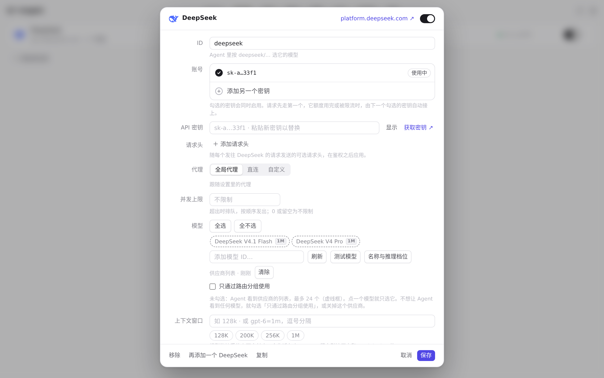

#777 界面预览
commit 1cf3d4a · 回到 PR · app.js 的 pluginMethod 在「已迁移的内置 Agent、其插件提供多种登录方式、又没有可区分它们的 site 标签」时不再固定返回 0，而是返回 undefined，让 startPluginSignIn 弹出登录方式选择器；site 命中的方式与只有一种方式的插件行为不变。
红线是鼠标走过的轨迹，红色圆环是一次点击；底部文字是这一步在做什么。空格暂停，← → 逐段查看。
 供应商面板中的登录方式位置 · 供应商页面：沙盒里只有 DeepSeek 一个供应商
供应商面板中的登录方式位置 · 供应商页面：沙盒里只有 DeepSeek 一个供应商

供应商面板中的登录方式位置 · 供应商面板的账号区——提供多种登录方式的内置插件，每种方式会在这里依次列出